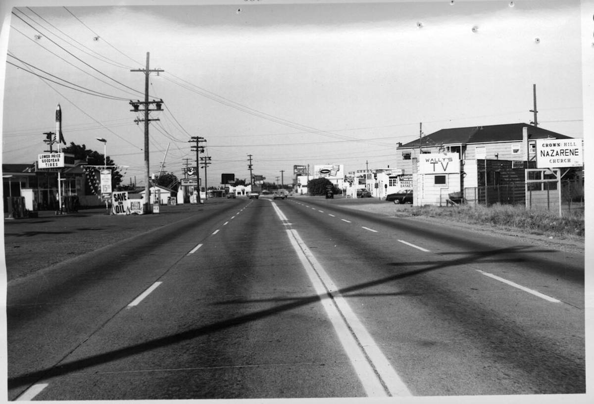

Living in Crown Hill

Crown Hill is a neighborhood in the city of Seattle, Washington, United States. (From Wikipedia, CC BY-SA 4.0)
Crown Hill is a neighborhood in Northwest, Seattle with about 4,912 residents. The typical home value is about $964K (+0.1% over the past year), and 104 homes sold in the last 12 months. It is very walkable, with about average crime for the area.
Home prices and the market
Home prices and the market
| Typical home value | $964K · +0.1% over 12 months |
|---|---|
| Homes sold, last 12 months | 104 · median sale price $850K · 31 were condos |
| Homes for sale (estimate) | 19 · homes typically go under contract in 8 days |
| Median household income | $168K · 53rd highest income of 155 |
Schools
Schools
| Elementary | Viewlands Elementary School, 0.7 mi · 60% meet standard Area average 68% · 73rd best elementary schools of 155 |
|---|---|
| Middle school | Whitman Middle School, 0.3 mi · 71% meet standard Area average 71% · 63rd best middle schools of 155 |
| High school | Ballard High School, 1.5 mi · 82% meet standard Area average 78% · 38th best high schools of 155 |
| Nearest college | North Seattle College, 1.8 mi |
Share of students meeting the Washington state standard in English and math (2024-25). The nearest school is not always the assigned school; check with the school district.
Safety
Safety
About 45 crimes per 1,000 residents a year (violent crimes counted three times), about average crime for the area: 100th lowest crime of 155. Based on mapped police incidents in this neighborhood, scaled to the city's FBI-reported rate. Busy commercial areas can look high because visitors are not counted as residents.
Getting around
Getting around
| Walkability | 16.2 of 20 (very walkable) · 40th most walkable of 155 |
|---|---|
| Light rail or train | Northgate, 2.0 mi · 84th closest to rail of 155 |
| Nearest bus stop | Holman Rd NW & 9th Ave NW, 0.11 mi |
| How residents commute | 12% take transit · 36% work from home |
Everyday amenities
Everyday amenities
| Grocery store | Grocery Outlet, 0.4 mi · 6 within a mile |
|---|---|
| Pharmacy | QFC pharmacy, 0.5 mi |
| Restaurants | 36 within a mile · 52nd most restaurants nearby of 155 |
| Shopping | Oak Tree Village Center, 1.3 mi |
| Hospital | UW Medical Center - Northwest, 2.0 mi · 7 clinics within 2 miles |
| Library | Greenwood Library, 1.1 mi |
Parks and recreation
Parks and recreation
| Nearest park | Crown Hill Park, 0.1 mi · 162 acres of parks within a mile |
|---|---|
| Large green space | Carkeek Park, 0.4 mi |
| Walking trail | Seattle Interuban Trail, 1.3 mi |
| Gyms, spas and studios | 20 within a mile |
| Golf | Seattle Golf Club, 2.7 mi |
Thinking about Crown Hill?
Rachel Yo, Realogics Sotheby's International Realty, can walk you through homes for sale, recent sales and what to know before you buy here.
Your details go only to Rachel Yo at Realogics Sotheby's International Realty to answer your request. They are not sold or shared, and your mobile number and texting permission are never shared with anyone for marketing.
Nearby neighborhoods
- North Beach/Blue RidgeSeattle · $1.13M
- GreenwoodSeattle · $781K
- Whittier HeightsSeattle · $875K
- Loyal HeightsSeattle · $956K
- BroadviewSeattle · $998K
- Licton SpringsSeattle · $744K
Data as of: home values Zillow 2026-09; recorded sales Nov 2025 – Oct 2026; schools OSPI 2024-25; Census ACS 2020-2024. Distances are straight-line from the center of the neighborhood.